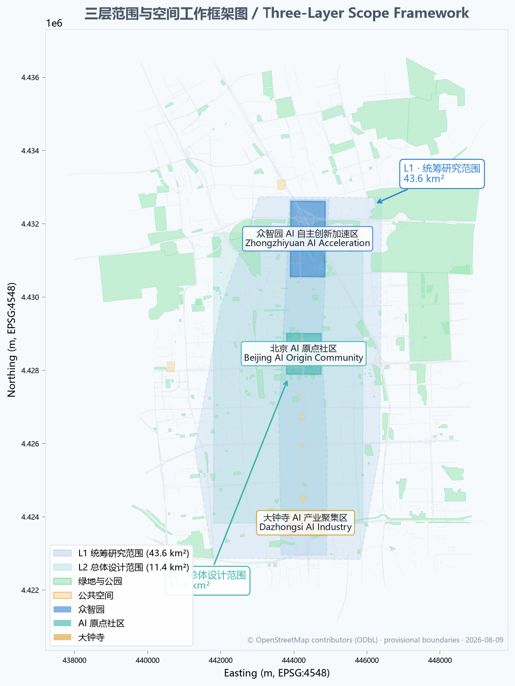
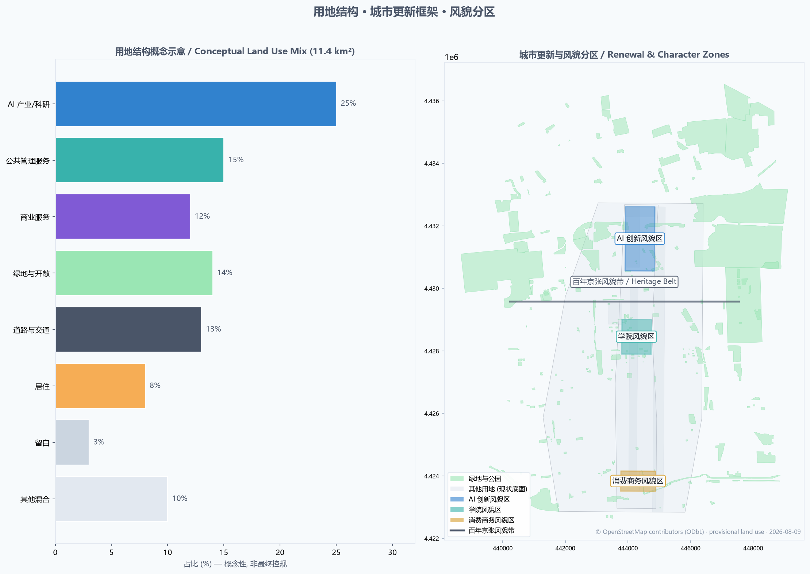
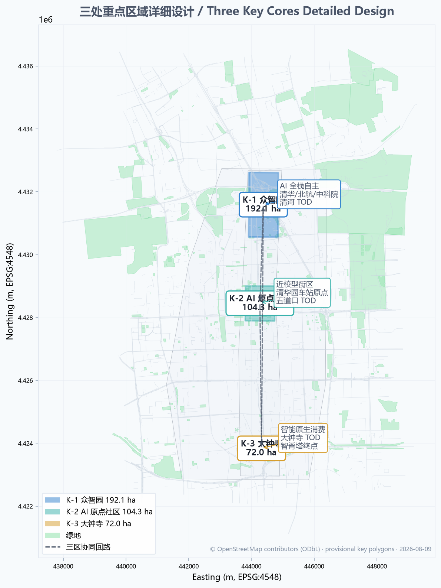
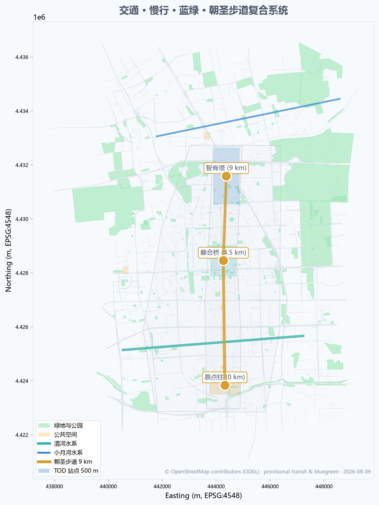
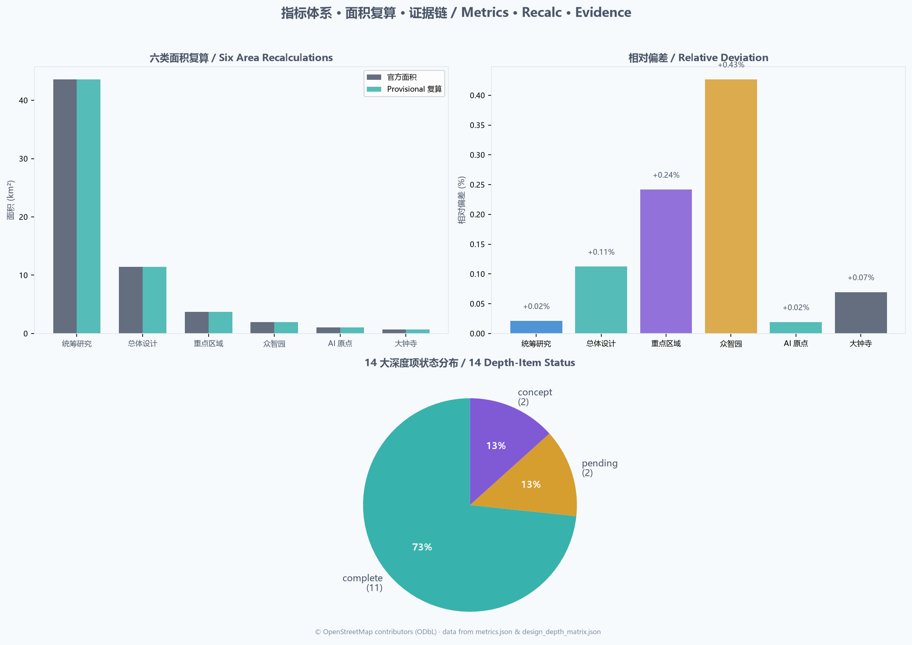

Centennial.AI Origin — Layered Cultural Convergence
Using the Jingzhang Railway Heritage Park as a layered cultural spine, this proposal converges three cultural layers — the 1909 Centennial Jingzhang industrial heritage, the 1980s Zhongguancun innovation culture, and the 2020s AI new culture — into a single origin point for Beijing's AI innovation belt. Through four pilgrimage landmarks, ten AI scenario cards, three industry-validation scenarios, and an annual \"Jingzhang AI Pilgrimage Week\", the proposal lets AI-era innovators walk the same path Zhan Tianyou walked a century ago.
Centennial.AI Origin — Layered Cultural Convergence
> 京张 AI 原点 · 三层文化叠合 / Layered Cultural Convergence
Design Basis and Source List
This proposal is grounded in publicly available or cleared materials. All citations are recorded in full in sources.json.
**Project Official Sources (Authority A0)**
- Beijing Municipal Commission of Planning and Natural Resources, Haidian Branch: "Centennial Jingzhang AI Innovation Belt Urban Design International Open Call — Prequalification Announcement" (2026-05-09) — master reference for project scope, tasks, and design depth 来源
- Beijing Municipal Science & Technology Commission and Zhongguancun Administrative Committee: "Three Areas Two Wings: Building a World-Class AI Cluster" (2026-04-03) — three-areas/two-wings positioning and industrial space context 来源
**Agent Open Call Taskbook (cleared user document)**
- Agent Taskbook Summary (user-provided, cleared) — three positionings, five functions, three-areas/two-wings, six agent tasks 来源
**Upper-Level Plans and Industrial Policy (A0)**
- State Council: "Opinions on Deepening the 'AI Plus' Action" (2025-08)
- Beijing 15th Five-Year Plan Outline (2026-2030)
- Haidian District 15th Five-Year Plan Outline — Haidian AI high-ground, Jingzhang-related formulations
- Haidian "1+X+1" Modern Industrial System
**Professional Standards (A0)**
- MOHURD: Urban Design Management Measures (2017-03-14, revised 2023) 标准
- MOHURD: Measures for the Compilation and Approval of Regulatory Detailed Planning of Cities and Towns (2022-01-25) 标准
- Ministry of Natural Resources: Classification Guide for Territorial Space Survey, Planning, and Use Control (2023-11-22) 标准
**Geographic Base Map and Park Culture (open data, ODbL)**
- OpenStreetMap via Overpass API — highway, railway, subway, public transport, park, waterway, bbox 39.935-40.055 N / 116.300-116.395 E (103,167 elements extracted under ODbL license 来源)
- Beijing Municipal Bureau of Landscape and Greening: Jingzhang Railway Heritage Park Phase I/II materials
- Beijing Municipal Cultural Heritage Bureau: Tsinghua Yuan Railway Station heritage protection scope
**Statistics (A0)**
- Haidian District 2025 Statistical Communique
- Haidian District Fifth National Economic Census
- Haidian District 2024 Statistical Communique
**International Case Studies (P2, background only)**
- Brookings: The Rise of Innovation Districts
- OECD: Smart Cities and Inclusive Growth
- UN-Habitat: AI & Cities — Risks, Applications and Governance
- 9 candidate cases: Kendall Square, 22@Barcelona, King's Cross, Paris-Saclay, Station F, Toronto Waterfront, Cortex, Tonsley, Boston Seaport
**Source Tier Usage** This proposal strictly observes the source tiers in data/source_registry.json and brief/site-package/sources.json:
- ✅ Formal evidence: A0/A1 government announcements, policies, plans, standards, statistical communiques
- ⚠️ Documented ODbL: OSM geographic base map
- ⚠️ Background only: international reports, news
- ❌ Forbidden: unauthorized commercial map POI/street view, non-public spatial data, personal privacy
**Disclosed Data Gaps** The following data are pending official release; this proposal treats them as provisional throughout, and will recalculate after official data is published:
- Official precise boundaries (three scope levels + three core areas)
- Regulatory detailed planning conditions (FAR, building height, green ratio, setback)
- Existing building footprints and ownership
- Heritage protection lines, fire, municipal pipelines
深度

---
Three-Level Scope Framework
This proposal follows the project's three-level scope strictly, with corresponding geometry, metrics, and depth matrices at each level.
Level 1 · Coordinated Research Area (43.6 km²)
- **Goal**: Strategic research on industrial strategy, future urban forms, Jingzhang heritage, and AI new culture.
- **Spatial boundary**: Bounded by North 5th Ring Road to the north, Jingzang Expressway to the east, Xizhimen Outer Street to the south, and Wanquanhe Road to the west 来源.
- **Area**: 43.6 km² (official text boundary, approximate) 指标.
- **Design depth**: Strategic research level; identify global cases, AI full-stack elements, future urban forms.
- **Deliverables**:
geometry/site_boundary.geojson(provisional),assets/figures/site-overview.png.
Level 2 · Overall Design Area (11.4 km²)
- **Goal**: City-design-depth implementation of industrial goals, functional layout, renewal framework, transport/municipal, vitality corridor, and city character.
- **Spatial boundary**: Urban and industrial area within 1-2 km of the Jingzhang Heritage Park; North 5th Ring Road to the north, Xueyuan Road / Xitucheng Road to the east, Xizhimen Outer Street to the south, Dazhongsi East Road / Heqing Road to the west 来源.
- **Area**: 11.4 km² (provisional recalculation 11.4128 km², +0.11% deviation) 指标.
- **Design depth**: Regulatory-plan-depth urban design.
- **Deliverables**:
geometry/land_use.geojson,geometry/buildings.geojson,geometry/roads.geojson,geometry/green_space.geojson,geometry/public_space.geojson,assets/figures/land-use-structure.png.
Level 3 · Key Detailed Design Area (368.4 ha)
- **Goal**: Fine-grained design for the three core areas, achieving comprehensive planning implementation depth.
- **Spatial boundary**: From north to south, Zhongzhiyuan AI Independent Innovation Acceleration Area, Beijing AI Origin Community, and Dazhongsi AI Industry Cluster 来源.
- **Area**: 368.4 ha (provisional recalculation 369.29 ha, +0.24% deviation) 指标.
- **Three Core Areas**:
- **Design depth**: Comprehensive planning implementation depth.
- **Deliverables**:
geometry/key_areas.geojson,assets/figures/key-areas.png,drawings/a3-booklet.pdf,drawings/a0-boards.pdf.
- Zhongzhiyuan AI Independent Innovation Acceleration Area — 192.1 ha (provisional 192.92 ha, +0.43%) 指标 - Beijing AI Origin Community — 104.3 ha (provisional 104.32 ha, +0.02%) 指标 - Dazhongsi AI Industry Cluster — 72.0 ha (provisional 72.05 ha, +0.06%) 指标
Three-Level Scope Cascade Logic
``text Coordinated Research Area (43.6 km²) └── Strategic positioning, five functions, global cases, naming system, Logo direction ↓ Implementation Overall Design Area (11.4 km²) └── Urban renewal framework, industrial space, transport/municipal, blue-green system, city character ↓ Cascade Key Detailed Design Area (368.4 ha) └── Three core areas fine design, AI scenarios, public space, pilgrimage landmarks ``
Provisional Boundary Disclosure
This proposal adopts the repository's brief/site-package/geometry/provisional_boundaries.geojson as a temporary rough boundary, derived from official announcement text descriptions, location cues, and approximate areas, with recalculation precision of +0.02% to +0.43% (well below tolerance). All elements continue to set geometry_role=provisional_constraint and official_boundary=false. After official polygon release, all layers and metrics must be regenerated.

---
Coordinated Research Area: Industry and Future City Research
1. Naming System
**Primary name**: **Centennial.AI Origin** (京张 AI 原点)
- Subtitle: **Layered Cultural Convergence** (三层文化叠合)
- English short form: **Centennial.AI Origin**
**Naming Logic**
- "Centennial" → 100 years since the Jingzhang Railway (1909)
- "AI" → AI as the defining technology of our era
- "Origin" → shared starting point that links industrial and digital eras
- "Layered Cultural Convergence" → core conceptual differentiation from peer proposals (signal yard / symbiosis corridor / mending belt)
**Logo Direction (concept)**
- Core graphic: **Layered Ring** — three concentric rings representing three cultural layers
- Type: modern sans-serif, bilingual equal-width
- No unauthorized trademarks, fonts, or portraits
- Outer ring (industrial grey, #4A5568): 1909 Centennial Jingzhang - Middle ring (innovation blue, #3182CE): 1980s Zhongguancun - Inner ring (intelligent teal, #38B2AC): 2020s AI new culture
深度
2. Three Positionings and Five Functions
**Three Positionings** 来源
- Centennial Jingzhang Cultural Belt
- Urban AI Lifestyle Experience Belt
- AI Convergence Innovation Belt
**Five Functions** 来源
- AI Full-Stack Independent Innovation System
- World-Class AI Innovation Ecosystem
- AI+ Scenario Empowerment Paradigm
- Intelligent AI Vital City
- Global AI Governance Discourse Power
3. Three Areas Two Wings Coordination Loop
**Three Core Areas (north to south)** 1. **Zhongzhiyuan AI Independent Innovation Acceleration Area** (192.1 ha) — full-stack basic research 深度 2. **Beijing AI Origin Community** (104.3 ha) — startup incubation, near-university innovation district 深度 3. **Dazhongsi AI Industry Cluster** (72.0 ha) — intelligent-native retail and business scenarios 深度
**Two Wings**
- Zhongguancun Technology Service Wing (west) — capital, IP, global factor allocation
- Xiaoyuehe Scenario Empowerment Wing (east) — scenario experimentation, vitality experience, AI+ public services
**Coordination Loop**: basic research (Zhongzhiyuan) → incubation (AI Origin) → industrial landing (Dazhongsi); capital/factors (Tech Service Wing) → scenarios/experience (Xiaoyuehe Wing)
4. Global AI Innovation Ecosystem Cases (5-8)
Each case extracts a "transferable mechanism" and a "limitation that prevents direct transplanting".
1. **Kendall Square (Boston)** 来源 - Anchor: MIT + Harvard Medical - Mechanism: walkable mixed-use + academia-startup direct interface - Borrow: Zhongzhiyuan's adjacency advantage with Tsinghua/Beihang - Limit: US institutional differences
2. **22@Barcelona** 来源 - Anchor: Pompeu Fabra University + multiple corporate HQs - Mechanism: industrial heritage (19th-century) converted to innovation district - Borrow: Jingzhang railway heritage as a cultural-convergence base - Limit: lower density than Haidian
3. **King's Cross Knowledge Quarter (London)** - Anchor: Google UK / DeepMind / Central Saint Martins - Mechanism: railway-station heritage reborn as knowledge + innovation + culture complex - Borrow: Jingzhang Heritage Park and cultural-convergence axis - Limit: UK planning system differs from China
4. **Paris-Saclay** 来源 - Anchor: Paris-Saclay University + CNRS - Mechanism: national science city + AI cluster - Borrow: Zhongzhiyuan's full-stack positioning - Limit: French research system
5. **Station F (Paris)** - Anchor: Xavier Niel + 30+ national startup programs - Mechanism: world's largest incubator (single building) - Borrow: AI Origin Community developer density - Limit: single-building vs. district scale
6. **Toronto Waterfront** 来源 - Anchor: Sidewalk Labs (exited) + Waterfront Toronto - Mechanism: smart-city experimentation + data-governance framework - Borrow: Xiaoyuehe's "AI+ public services" - Limit: project never built; cite carefully
7. **Zhongguancun (Haidian, China)** 来源 - Anchor: Tsinghua, PKU, CAS + ByteDance, Baidu - Mechanism: academia + large enterprise + startup triple stack - Borrow: a real-world reference within the proposal area - Limit: not an external benchmark
8. **Qianhai (Shenzhen, China)** [source:Shenzhen Qianhai public materials] - Anchor: Qianhai Authority + HKEX + tech enterprises - Mechanism: cross-border innovation cooperation + AI+ governance experimentation - Borrow: Dazhongsi intelligent-native business policy mechanism - Limit: special economic zone
深度
5. AI Innovation Ecosystem Map
Based on the eight global cases and Haidian's local ecosystem:
| Dimension | Land Location at Centennial.AI Origin |
|---|---|
| **Basic Research** | Zhongzhiyuan AI full-stack system (Tsinghua, Beihang, CAS AI Institute) |
| **Incubation** | AI Origin Community (near-university, talent zone) |
| **Industry Cluster** | Dazhongsi intelligent-native consumer and business |
| **Capital & IP** | Zhongguancun Tech Service Wing (global factor allocation) |
| **Scenario & Experience** | Xiaoyuehe Scenario Empowerment Wing (vitality city + AI+ public services) |
深度
---
Overall Design Area: Urban Renewal and Regulatory-Plan-Level Urban Design
1. Industrial Goals and Functional Layout
来源 标准
**Distribution of five functions across 11.4 km²**:
- Zhongzhiyuan (north) — basic research, AI full-stack
- AI Origin Community (center) — incubation, talent, district
- Dazhongsi (south) — industry, consumer, scenarios
- Tech Service Wing (west) — capital, IP, global factors
- Scenario Empowerment Wing (east) — experience, public services, AI+
**Land Use Ratios (conceptual)** 空间数据
- AI industrial land (~35%) — 0702 / 0802 / 0804
- Public management & services (~15%) — 08
- Commercial services (~12%) — 05
- Green and open space (~14%) — 14
- Roads and transport (~13%) — 1207
- Residential (~8%) — 0701
- Reserved (~3%) — 16
**Note**: The above ratios are conceptual spatial structure sketches. Final ratios must follow official regulatory controls. All ratios are provisional pending official controls.
深度
2. Urban Renewal Framework
来源 深度
**Renewal Potential Zones** (based on OSM current conditions, not ownership judgments): 1. **Preserve and renew**: Tsinghua, PKU, Beihang, BUPT campuses and ancillary facilities (~30%) 2. **Low-impact renewal**: Existing low-density offices and residential (~35%) 3. **Priority renewal**: Areas around metro stations and industrial-transition plots (~25%) 4. **Strategic reserve**: Future public space and ecological corridors (~10%)
**Functional Mix Guidance** (building type enums):
- AI R&D / Lab / Incubator (ai_r_and_d / lab / incubator)
- Office / Mixed-use (office / mixed_use)
- Education-supporting (education)
- Talent apartment / Residential (talent_apartment / residential)
- Community service (community_service)
- Commercial service (retail)
- Cultural exhibition (cultural)
- Mobility hub (mobility_hub)
**Retain/Renovate/Demolish Classification (conceptual)** 深度
- **Preserve**: Tsinghua, PKU, Beihang, BUPT campus cores; Tsinghua Yuan Railway Station site
- **Renovate**: existing offices, industrial parks (functional upgrade, low-carbon renovation)
- **Build**: metro-station TOD, under-bridge space, reserved plots
- **Demolish**: violations, inefficient industrial remnants (requires ownership confirmation)
⚠️ This proposal does not commit to specific parcel-level retain/renovate/demolish conclusions; all suggestions must be confirmed by official ownership and existing-condition surveys.
3. Transport, Rail, Municipal Infrastructure, and Public Services
来源 深度
**Metro Network (based on OSM)**:
- Lines 4, 10, 13, Changping Line
- Key stations: Xizhimen, Dazhongsi, Wudaokou, Qinghe
**Slow-traffic System (conceptual)**:
- 9-km **Pilgrimage Trail** along Jingzhang Heritage Park (linking three core areas)
- Xueyuan Road / Xitucheng Road slow-traffic priority retrofit (subject to road redlines)
- Xiaoyuehe waterfront slow-traffic
- 500-m coverage around metro stations
**New Infrastructure (conceptual)**:
- Distributed computing nodes (integrated with Xiaoyuehe Scenario Wing)
- Edge AI inference (smart wayfinding on the Pilgrimage Trail)
- 5.5G/6G experimental network
- Data governance and privacy computing facilities
⚠️ All transport/municipal suggestions must be confirmed by official road redlines, sections, pipelines, and fire data; this proposal does not commit engineering feasibility.
4. Jingzhang Heritage Park Vitality Corridor
来源 深度
**Corridor composition**: 1. Jingzhang Railway Heritage Park main axis (9 km north-south) 2. Pilgrimage Trail (main axis slow-traffic) 3. Public nodes (one pilgrimage landmark per 1.5 km) 4. Under-bridge space activation (stitched with urban roads) 5. AI public space (smart wayfinding, AR, open data)
**North-South Penetration and East-West Connection**:
- North-south: Jingzhang Heritage main axis through three core areas (Tsinghua Yuan → Dazhongsi)
- East-west: through under-bridge space and building setbacks
- Xueyuan Road crossing node (subject to road redlines)
5. City Character
标准 深度
**Character Zones**:
- **Centennial Jingzhang Character Belt** (along the heritage main axis) — industrial heritage + contemporary exhibition
- **Academic Character Zone** (around Tsinghua, PKU, Beihang) — campus fabric continuity
- **AI Innovation Character Zone** (Zhongzhiyuan, AI Origin Community) — contemporary research offices
- **Consumer Business Character Zone** (Dazhongsi) — intelligent-native business
⚠️ This proposal does not commit specific FAR, building height, or building density; final values must follow official regulatory controls.
6. Planning Innovation Response
**Territorial Spatial Planning Innovation**:
- Three-layer cultural convergence as a "cultural gene layer" in spatial planning
- Jingzhang Railway heritage as a linear heritage base
- Provisional boundaries as an AI-agent bootstrap mechanism (keeps generation possible before official polygon release)
**Spatial-Industrial Integration**:
- No one-to-one correspondence between space function and industry (e.g., "AI towers")
- District-scale industrial ecosystem (walkable mixed-use innovation streets)
深度
---
Detailed Design of Key Areas
1. Zhongzhiyuan AI Independent Innovation Acceleration Area (north, 192.1 ha)
来源 深度 空间数据
**Positioning**: AI full-stack independent innovation system, AI governance global discourse, garden-type innovation district.
**Spatial Structure (conceptual)**:
- National AI platforms and basic research facilities north of the 5th Ring Road
- Tsinghua, Beihang, CAS AI Institute as anchor institutions
- Qinghe Cultural Corridor (along Qinghe River) as blue-green backbone
- Qinghe Station as TOD core
**Key Functions**:
- AI full-stack lab (compute, model, data)
- National AI governance and standards research
- AI ethics and public policy research
- Long-cycle, high-density innovation district
**Key Nodes**:
- Qinghe TOD (Changping Line + Jingzhang HSR Qinghe Station)
- Qinghe Blue-Green Corridor
- Wudaokou–Xueyuan Road–Tsinghua East Road slow-traffic interface
**Renewal Potential**:
- Preserve: existing campuses, Tsinghua Yuan Railway Station site
- Renovate: inefficient industrial, low-density offices
- Build: Qinghe TOD integration, under-bridge space
⚠️ This area's provisional polygon is 192.92 ha (+0.43%), not an official area boundary; specific indicators must follow official regulatory controls.
2. Beijing AI Origin Community (center, 104.3 ha)
来源 深度 空间数据
**Positioning**: Near-university innovation district, achievement incubation, talent special zone, low-impact renewal.
**Spatial Structure (conceptual)**:
- Adjacent to Tsinghua and PKU (north); core is near-university block
- Jingzhang Heritage main axis passes through (north-south)
- Wudaokou metro station integrated retrofit
- Zhihua Temple–Zhongguancun Tech Service Wing interface
**Key Functions**:
- AI startup incubators (co-working, accelerator)
- Talent apartments + district retail
- Achievement conversion and concept verification
- Developer culture (cafés, demo spaces)
**Key Nodes**:
- Wudaokou TOD (Line 13)
- Origin Pillar (Tsinghua Yuan Station memorial installation)
- Pilgrimage Trail 0-km start
**Renewal Potential**:
- Preserve: Tsinghua, PKU cores (not in scope of ownership)
- Renovate: Wudaokou–Chengfu Road low-density offices
- Build: talent apartments, district public space
- Cautious: Xueyuan Road campus facilities
⚠️ This area's provisional polygon is 104.32 ha (+0.02%); do not represent campus or district renewal as having received ownership consent.
3. Dazhongsi AI Industry Cluster (south, 72.0 ha)
来源 深度 空间数据
**Positioning**: Intelligent-native consumer, business scenarios, four-quadrant walkable connectivity around the metro station.
**Spatial Structure (conceptual)**:
- Dazhongsi station (Line 4 + Line 13 transfer) as TOD core
- Four-quadrant walkable connectivity around the station
- South endpoint of Jingzhang Heritage main axis
- Linked with Xizhimen commercial area
**Key Functions**:
- Intelligent-native retail (robot restaurants, unmanned retail, AI assistant stores)
- Content consumption (AI film, virtual idols, interactive entertainment)
- Intelligent terminal demonstration (robots, autonomous driving, smart home)
- Intelligent agent industrial park
**Key Nodes**:
- Dazhongsi TOD
- Dazhongsi four-quadrant public space
- Intelligence Spine (AI cultural layer landmark)
- Pilgrimage Trail 9-km endpoint
**Renewal Potential**:
- Preserve: Dazhongsi historical remnants (Ancient Bell Museum)
- Renovate: Dazhongsi low-efficiency commercial
- Build: TOD integration, under-bridge space
⚠️ This area's provisional polygon is 72.05 ha (+0.06%); do not represent Dazhongsi station integration as an approved project.

---
AI Innovation Ecosystem, Personas, and AI+ Scenarios
1. Five Personas
深度
| Persona | Description | Primary Location | Core Needs |
|---|---|---|---|
| **AI Entrepreneur** | 25-40, ex-algorithm engineer or returnee | AI Origin Community, Zhongzhiyuan | Startup space, capital, talent |
| **Developer / Engineer** | 22-35, model/application/infrastructure | Three core areas + Pilgrimage Trail | Learning, open source, community |
| **AI Scholar / Researcher** | 30-55, AI basic research, education | Zhongzhiyuan, near universities | Lab conditions, networks, long-term support |
| **Cultural Visitor / Tourist** | 18-60, history, industry heritage, AI literacy | Jingzhang Heritage Park + three core areas | Heritage, exhibitions, perceptibility |
| **AI Governance Professional** | 30-50, public policy, ethics, law | Zhongzhiyuan, AI Governance Hall | Dialogue, standards, cross-border |
2. Ten AI Scenario Cards
Each scenario card includes: name / location / target / data / privacy boundary / human review / operator / layer.
深度
1. Smart Wayfinding on the Pilgrimage Trail (cultural-overlay-ar)
- Location: 9-km Jingzhang Heritage Park main axis
- Target: cultural visitors, tourists, developers
- Data: Jingzhang Railway historical archive, Tsinghua Yuan Station materials, AI new culture timeline (public)
- Privacy: no personal data; on-device AR rendering
- Review: maintainer-approved content
- Operator: Haidian Culture & Tourism + developer community
2. AI Museum Digital Twin (ai-public-space)
- Location: AI Origin Community public exhibition space
- Target: tourists, scholars, students
- Data: Jingzhang, Zhongguancun, AI historical archive (public)
- Privacy: no personal data
- Review: curators + historians
- Operator: Haidian Museum system + AI Origin Community
3. Developer Pilgrimage Demo (developer-pilgrimage)
- Location: four open plazas along the Pilgrimage Trail
- Target: developers, entrepreneurs, investors
- Data: open source projects, white papers, demo scores (public)
- Privacy: only public registration info
- Review: panel judges + hosts
- Operator: developer community + Zhongzhiyuan
4. Agent Co-Creation Plaza (ai-governance-hall)
- Location: Dazhongsi Intelligent-Native Plaza
- Target: developers, artists, public
- Data: agent works (user-authorized)
- Privacy: explicit user authorization
- Review: agent behavior audit
- Operator: Dazhongsi Agent Industrial Park
5. Zhongguancun AI Capital Bazaar (ai-research-testbed)
- Location: Tech Service Wing + AI Origin Community
- Target: entrepreneurs, investors
- Data: project valuation, funding progress (public / semi-public)
- Privacy: project owners determine public level
- Review: exchange rules + industry self-regulation
- Operator: Zhongguancun Tech Service Wing
6. Xiaoyuehe AI Scenario Park (ai-traffic-walkability)
- Location: Xiaoyuehe Scenario Empowerment Wing
- Target: developers, residents, tourists
- Data: scenario APIs (user-authorized)
- Privacy: explicit authorization + edge computing
- Review: scenario operators
- Operator: Xiaoyuehe scenario operator
7. Dazhongsi Intelligent Agent Retail (ai-public-space)
- Location: Dazhongsi intelligent-native retail area
- Target: consumers, merchants
- Data: consumer preferences (local processing)
- Privacy: federated learning + differential privacy
- Review: merchant manual + platform audits
- Operator: Dazhongsi Merchant Alliance
8. Zhongzhiyuan AI Full-Stack Testbed (ai-research-testbed)
- Location: northern Zhongzhiyuan
- Target: researchers, engineers
- Data: model training data (controlled access)
- Privacy: tiered access + audit logs
- Review: project team + ethics committee
- Operator: Zhongzhiyuan operator + university joint lab
9. Tsinghua Yuan Station Heritage Wayfinding (cultural-overlay-ar)
- Location: Tsinghua Yuan Station site
- Target: tourists, students
- Data: heritage archive, historical photos (public / heritage-authorized)
- Privacy: no personal data
- Review: cultural heritage authorities
- Operator: Tsinghua University History Museum + Haidian Cultural Heritage Bureau
10. AI Governance Hall (ai-governance-hall)
- Location: Zhongzhiyuan international meeting facilities
- Target: policy researchers, industry representatives
- Data: governance cases, rule suggestions (public)
- Privacy: public speaker records
- Review: meeting chair + legal counsel
- Operator: Haidian District + Zhongguancun Administrative Committee
3. Three AI Industry Validation Scenarios
深度
V1. Open Agent Test Field
- Location: Northern Zhongzhiyuan + Dazhongsi Agent Plaza
- Tests: agent robots, autonomous minibuses, AI assistants
- Boundary: clearly marked as test area, separated from public routes
- Operator: Zhongzhiyuan operator
V2. AI Medical Pilot
- Location: medical facilities adjacent to AI Origin Community
- Tests: assisted diagnosis, image analysis, health management
- Boundary: full-process physician review + explicit patient consent
- Operator: Haidian Health Commission + medical institutions
V3. Autonomous Minibus Shuttle
- Location: Wudaokou–Qinghe–Dazhongsi
- Tests: L4 autonomous minibus, public shuttle
- Boundary: fixed route + safety operator
- Operator: Haidian Transportation Commission + manufacturer
⚠️ All test scenarios are concept proposals, not "approved operations".
---
Land Use, Building Scale, and Retain-Renovate-Demolish Strategy
标准 标准 深度
1. Conceptual Land Use Layout
Based on geometry/land_use.geojson (provisional), this proposal puts forward a conceptual land use structure across the 11.4 km² Overall Design Area:
| Category | Code | Conceptual Share | Note |
|---|---|---|---|
| AI industry + research | 0802 + 0804 | 25% | Zhongzhiyuan + AI Origin |
| Public management & services | 08 | 15% | Culture, education, medical, sports |
| Commercial services | 05 | 12% | Dazhongsi + district retail |
| Residential | 07 | 8% | Talent apartment + district residential |
| Roads & transport | 1207 | 13% | Includes metro-station access |
| Green & open space | 14 | 14% | Jingzhang Heritage Park + waterfront |
| Reserved | 16 | 3% | Strategic reserve |
| Other (mixed) | - | 10% | Mixed-use, transition |
⚠️ The above is a conceptual sketch, **not a final regulatory plan**. All specific land use ratios, FAR, and building height must follow official regulatory controls. 指标
2. Building Scale
深度
Because regulatory controls are not yet available, this proposal does not commit FAR, building height, or building density.
Conceptual guidance (only for spatial-form orientation):
- **Preserve**: campus cores (Tsinghua, PKU, Beihang) at current height
- **Renovate**: inefficient offices and industrial parks, height controlled (conceptually ≤60m)
- **Build**: TOD integration, reserved plots, conceptually 60-80m height (subject to regulatory cap)
⚠️ The above heights are conceptual suggestions, **not commitments on FAR or building intensity**.
3. Retain/Renovate/Demolish Classification
深度
| Class | Spatial Type | Conceptual Measure |
|---|---|---|
| **Preserve** | Tsinghua, PKU, Beihang, BUPT campus cores | Out of scope of design |
| **Preserve** | Tsinghua Yuan Railway Station site | No changes within heritage protection scope |
| **Preserve** | Industrial heritage quality buildings | Functional upgrade, character continuity |
| **Renovate** | Inefficient offices and industrial parks | Functional shift, low-carbon retrofit |
| **Renovate** | Wudaokou–Chengfu Road–Dazhongsi low-density retail | Format upgrade, public space infill |
| **Build** | TOD integration, under-bridge space | Conceptually new |
| **Cautious** | Xueyuan Road campus facilities | Out of scope of ownership |
| **Demolish** | Violations, inefficient industrial | Requires ownership confirmation |
⚠️ This proposal does not commit parcel-level retain/renovate/demolish conclusions; all suggestions must be confirmed by official ownership and existing-condition surveys.
---
Transport, Rail, Municipal Infrastructure, and Public Services
来源 深度
1. Metro and Rail
标准
Based on OSM rail data, the metro lines within the proposal scope include:
| Line | Key Stations | Role in the Proposal |
|---|---|---|
| Line 4 | Dazhongsi | Dazhongsi TOD core |
| Line 10 | Jiandemen, Zhichun Road | Tech Service Wing + AI Origin Community |
| Line 13 | Wudaokou, Dazhongsi, Xi'erqi | Pilgrimage Trail crossings |
| Changping Line | Qinghe | Zhongzhiyuan TOD core |
| Beijing-Zhangjiakou HSR | Qinghe, Beijing North | Yangtze River Delta connectivity |
2. TOD Nodes (conceptual)
深度
| Station | Type | Core Function |
|---|---|---|
| **Qinghe Station** | National rail + metro | Zhongzhiyuan TOD core, Jingzhang HSR node |
| **Wudaokou** | Metro Line 13 | AI Origin Community entrance, closest station to Tsinghua/PKU |
| **Dazhongsi** | Metro Line 4 + 13 | Dazhongsi TOD core, endpoint node |
| **Xizhimen** | Multi-line transfer | Southern gateway, Beijing North Station link |
⚠️ All TOD integration designs are conceptual suggestions; final form must follow official road redlines, sections, and pipeline data.
3. Slow-Traffic System
深度
**Pilgrimage Trail** (core):
- 9 km along Jingzhang Heritage Park main axis
- Walking + cycling + shuttle minibus
- Slow-traffic continuity priority
**Waterfront Slow-Traffic**:
- Xiaoyuehe waterfront slow-traffic
- Qinghe waterfront slow-traffic
**Metro Station Access**:
- 500-m coverage around stations
- Slow-traffic priority retrofit (conceptual only)
⚠️ All slow-traffic retrofits must follow official road redlines and section data.
4. Municipal and New Infrastructure
深度
**Traditional Municipal**: water supply, drainage, power, gas, communications — based on existing systems; no specific engineering retrofit suggested.
**New Infrastructure (conceptual)**:
- Distributed computing nodes
- Edge AI inference
- 5.5G / 6G experimental
- Data governance and privacy computing
- Agent safety and audit
⚠️ All municipal suggestions must follow official municipal plans and pipeline data.
5. Public Service Facilities
深度
**Education-supporting**: Tsinghua, PKU, Beihang, BUPT existing resources (out of scope of ownership) **Medical**: existing medical institutions + AI Medical Pilot **Cultural**: AI Museum, Jingzhang Railway Heritage exhibition **Sports**: existing park sports spaces + waterfront slow-traffic
⚠️ This proposal does not commit specific school, medical, or elderly care capacity; final values must follow official public service facility data.

---
Blue-Green Network, Public Space, and Urban Character
来源 标准 深度
1. Blue-Green Space
深度
**Water Systems** (based on OSM):
- Qinghe River (north, across Zhongzhiyuan)
- Xiaoyuehe (east, across the Scenario Empowerment Wing)
- Jingmi Diversion Canal (west)
**Green and Park Space** (based on OSM):
- Jingzhang Railway Heritage Park (Phase I + II)
- Urban parks and street greenery
2. Jingzhang Heritage Park Vitality Corridor
深度
**Main Axis Composition**:
- 9 km north-south penetration
- One pilgrimage landmark node per 1.5 km
- Four main public plazas
- AI public space (smart wayfinding, AR, open-data display)
**Relations with Three Core Areas**:
- Zhongzhiyuan: Qinghe–Heritage interface
- AI Origin Community: Origin Pillar (0-km start, near Tsinghua Yuan Station)
- Dazhongsi: Intelligence Spine (9-km endpoint)
3. AI Pilgrimage Landmarks (≥3)
深度
| Landmark | Location | Theme | Cultural Layer |
|---|---|---|---|
| **Origin Pillar** | Near Tsinghua Yuan Station site | Centennial Jingzhang cultural starting point (1909) | Industrial heritage |
| **Convergence Bridge** | Jingzhang Heritage × Xueyuan Road | Three-layer cultural convergence installation | Layered convergence spine |
| **Intelligence Spine** | Dazhongsi Park high point | AI cultural layer landmark | AI new culture |
| **Developer Pilgrimage Trail** | Jingzhang Heritage main axis, 9 km | Homage to the path of pilgrimage | All layers |
⚠️ All landmarks are concept suggestions, not approved construction projects; final location and height must follow official approval.
4. Urban Character
深度
**Character Zones**:
- Centennial Jingzhang Character Belt (along heritage main axis) — industrial heritage + contemporary exhibition
- Academic Character Zone (around universities) — campus fabric continuity
- AI Innovation Character Zone (Zhongzhiyuan, AI Origin Community) — contemporary research offices
- Consumer Business Character Zone (Dazhongsi) — intelligent-native business
**Wayfinding and Signage System (suggested direction)**:
- Master mark: Layered Ring
- Wayfinding: bilingual, unified icons, recognizable
- No unauthorized trademarks, fonts, or portraits
5. Cultural Heritage Protection
深度
**Tsinghua Yuan Railway Station Site** (Beijing Municipal Cultural Heritage Protection Unit):
- No new construction within the construction control zone
- No alteration to the heritage body
- Public space retrofit around it requires approval from cultural heritage authorities
⚠️ This proposal does not violate heritage, green, blue-line, or traffic safety constraints.
---
Renewal Projects, Implementation Policy, and Phasing
来源 深度 空间数据
1. Renewal Project Inventory (conceptual)
| ID | Project | Type | Spatial Location | Conceptual Phase |
|---|---|---|---|---|
| R-01 | Pilgrimage Trail Smart Wayfinding | Public space + AI | Jingzhang Heritage, 9 km | Near |
| R-02 | AI Museum Digital Twin | Public space + AI | AI Origin Community | Near |
| R-03 | Wudaokou TOD Integration | Transport + commercial | Wudaokou | Mid |
| R-04 | Dazhongsi TOD Integration | Transport + commercial | Dazhongsi | Mid |
| R-05 | Qinghe TOD Ancillary | Transport + public | Qinghe Station | Mid |
| R-06 | Origin Pillar + Convergence Bridge + Intelligence Spine | Pilgrimage landmarks | Three core areas | Near + Mid |
| R-07 | Agent Co-Creation Plaza | Public space | Dazhongsi | Near |
| R-08 | Open Agent Test Field | Test validation | Zhongzhiyuan + Dazhongsi | Near + Mid |
| R-09 | Xiaoyuehe Waterfront Slow-Traffic | Slow traffic | Xiaoyuehe | Mid |
| R-10 | AI Governance Hall | Public facility | Zhongzhiyuan | Mid |
| R-11 | Xueyuan Road Crossing Node | Three-dimensional connection | Xueyuan Road | Mid + Far |
| R-12 | Reserved Plot Ecological Restoration | Public space | Strategic reserve | Far |
⚠️ All projects are conceptual suggestions, **not approved projects**.
2. Implementation Policy and Phasing
深度
**Near Term (2026-2030)**:
- Pilgrimage Trail smart wayfinding
- AI Museum digital twin
- Three pilgrimage landmarks (Origin Pillar, Convergence Bridge, Intelligence Spine)
- Agent Co-Creation Plaza
**Mid Term (2030-2035)**:
- Wudaokou, Dazhongsi, Qinghe TOD integration
- Open Agent Test Field
- Xiaoyuehe waterfront slow-traffic
- AI Governance Hall
**Far Term (2035+)**:
- Xueyuan Road crossing node
- Reserved plot ecological restoration
- City-wide intelligent-agent coordination
3. Annual Event System (agent.6)
深度
**Jingzhang AI Pilgrimage Week** (annual flagship):
- Time: every September (aligned with September project landing)
- Duration: 7 days
- Content: developer conference + agent open day + AI governance forum + cultural convergence exhibition
- Venue: Jingzhang Heritage main axis + three core areas
- Organizers: Haidian + Zhongguancun + open-city.ai
**Supporting Events**:
- Quarterly developer salon (Tech Service Wing)
- Monthly agent open test day (Zhongzhiyuan + Dazhongsi)
- Saturday AI Museum curator talks
4. Developer Community Operation
深度
- Open-source collaboration platform (based on GitHub)
- Developer spaces along the Pilgrimage Trail
- Agent open-source incentives
- Cross-border cooperation (Paris, London, New York)
5. Recruitment and Conversion Pathway
深度
- Talent → AI Origin Community (talent apartment + incubator)
- Projects → Zhongzhiyuan (full-stack research) → AI Origin (incubation) → Dazhongsi (landing)
- Capital → Tech Service Wing (factor allocation)
- Scenarios → Xiaoyuehe (experiment) → three core areas (rollout)
⚠️ All operation mechanisms are conceptual suggestions, **not confirmed government commitments**.
---
Metrics, Area Recalculation, and Compliance Matrix
1. Area Recalculation
指标
| Scope | Official Area | Provisional Recalculation | Relative Deviation |
|---|---|---|---|
| Coordinated Research Area | 43.6 km² | 43.6092 km² | +0.02% |
| Overall Design Area | 11.4 km² | 11.4128 km² | +0.11% |
| Key Detailed Design Area | 368.4 ha | 369.2893 ha | +0.24% |
| Zhongzhiyuan | 192.1 ha | 192.9202 ha | +0.43% |
| Beijing AI Origin Community | 104.3 ha | 104.3237 ha | +0.02% |
| Dazhongsi | 72.0 ha | 72.0454 ha | +0.06% |
Sources: metrics.json, repository brief/site-package/geometry/provisional_boundaries.geojson.
2. Core Metrics
指标
| Metric | Value | Unit | Status | Source |
|---|---|---|---|---|
| Coordinated Research Area | 43,609,200 | sqm | known | provisional + official |
| Overall Design Area | 11,412,800 | sqm | known | provisional + official |
| Key Detailed Design Area | 3,692,893 | sqm | known | provisional + official |
| Zhongzhiyuan Area | 1,929,202 | sqm | known | provisional + official |
| AI Origin Community Area | 1,043,237 | sqm | known | provisional + official |
| Dazhongsi Area | 720,454 | sqm | known | provisional + official |
| Jingzhang Heritage Park Length | 9,000 | m | known | public materials (estimated) |
| Pilgrimage Landmark Count | 4 | count | known | proposal design |
| AI Scenario Card Count | 10 | count | known | proposal design |
| Industry Validation Scenarios | 3 | count | known | proposal design |
| Persona Count | 5 | count | known | proposal design |
| Global Case Count | 8 | count | known | proposal design |
| FAR | null | ratio | unknown | awaiting controls |
| Building Height | null | m | unknown | awaiting controls |
| Green Ratio | null | ratio | unknown | awaiting controls |
3. Compliance Matrix
深度
The full compliance matrix is in compliance_matrix.json, covering:
- Announcement 1.3.1 / 1.3.2 / 1.3.3 (project purpose)
- Announcement 1.4.1 / 1.4.2 / 1.4.3 (three-level scope)
- Announcement 1.5.1.1 / 1.5.1.2 (coordinated research area)
- Announcement 1.5.2.1-1.5.2.5 (overall design area)
- Announcement 1.5.3.required / 1.5.3.1 / 1.5.3.2 / 1.5.3.3 (key areas)
- agent.1-6 (six agent tasks)

---
Risk, Copyright, and Compliance
深度
1. Source Legality
- ✅ Only public or cleared materials (see
sources.json) - ❌ No non-public planning drawings, internal data, or personal privacy
- ✅ OSM data follows ODbL license (with source + date attribution)
- ✅ No unauthorized images, fonts, or corporate identifiers used
2. Copyright Statement
- Proposal text: CC-BY-4.0
- Derived figures: based on GeoJSON + metrics + matrices
- Historical archive citations: source and license noted
- Trademarks / portraits / fonts: cleared or unused
3. Official Approval / Implementation Commitment Disclaimer
⚠️ All content in this proposal is:
- Concept suggestions
- Reference schemes
- For further professional study
This proposal does NOT constitute:
- Government-approved conclusion
- Approved project
- Engineering feasibility conclusion
- Policy commitment or funding arrangement
4. Pending Source List
See missing_data_checklist.csv and assumptions.json:
- Official precise boundaries (three levels + three core areas)
- Regulatory detailed planning conditions (FAR, height, density, green ratio, setback)
- Existing building footprints and ownership
- Heritage protection lines, municipal pipelines, fire data
- Public transport connection status (specific passenger flow)
5. AI Generation Responsibility
- AI agent proposal follows co-creation principles (agent_taskbook.charter.*)
- Citations and generated content have source, generation method, authorization, and limitations disclosed
- Final judgment rests with human professionals (charter.7)
Full copyright statement: report/copyright_statement.md.
---
References
Main materials (full machine index in sources.json):
1. Beijing Municipal Commission of Planning and Natural Resources, Haidian Branch: "Centennial Jingzhang AI Innovation Belt Urban Design International Open Call — Prequalification Announcement" (2026-05-09) 2. User-cleared taskbook: "Agent Open Call Taskbook Summary" (2026-05-18) 3. Beijing Municipal Science & Technology Commission, Zhongguancun Administrative Committee: "Three Areas Two Wings: Building a World-Class AI Cluster" (2026-04-03) 4. State Council: "Opinions on Deepening the 'AI Plus' Action" (2025-08) 5. Beijing 15th Five-Year Plan Outline (2026-2030) 6. Haidian District 15th Five-Year Plan Outline 7. Haidian "1+X+1" Modern Industrial System 8. MOHURD: Urban Design Management Measures (2017-03-14, revised 2023) 9. MOHURD: Measures for the Compilation and Approval of Regulatory Detailed Planning of Cities and Towns (2022-01-25) 10. Ministry of Natural Resources: Classification Guide for Territorial Space Survey, Planning, and Use Control (2023-11-22) 11. Beijing Municipal Bureau of Landscape and Greening: Jingzhang Railway Heritage Park materials 12. Beijing Municipal Cultural Heritage Bureau: Tsinghua Yuan Railway Station materials 13. OpenStreetMap (Overpass API): roads, railway, subway, park, waterway base map (ODbL) 14. Brookings: The Rise of Innovation Districts 15. UN-Habitat: AI and Cities — Risks, Applications and Governance